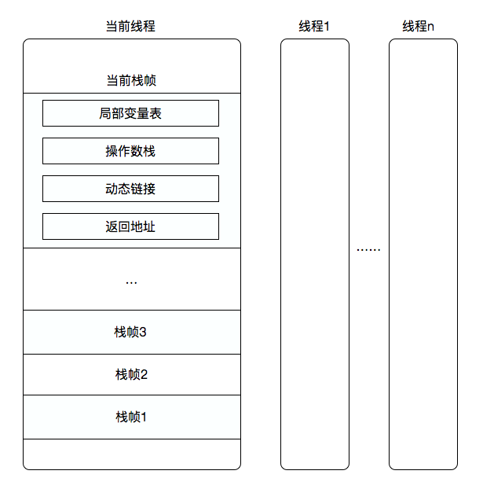
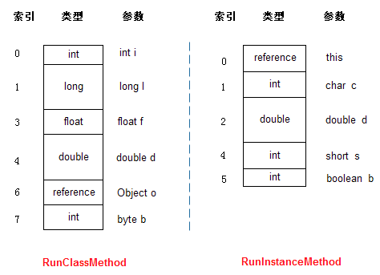
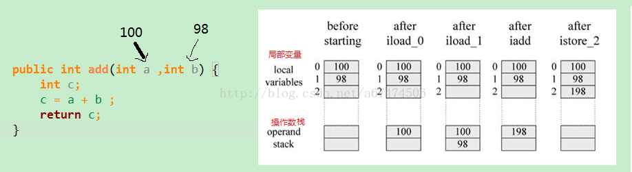

本篇博客信息量依旧庞大！
前言
在讨论本文的主题之前，我们先来思考一下：什么是虚拟机字节码执行引擎？它有什么作用？
在说明这个问题之前，我们先来想想之前我们已经学习过的class文件结构与类加载机制。
当一个Java程序写好之后，我们使用javac命令对其进行编译，产生的虚拟机字节码存储在class文件中，我在JVM–解析Class类文件结构一文中详细分析了class文件中字节码的存储格式及其组成。然后我们紧接着说明了JVM–详解类加载机制，你应该了解到—类加载机制就是将class文件中的字节码加载进JVM的方法区并生成这个类的class对象的过程（再次强调不是生成这个类的实例化对象的过程）。
虚拟机字节码执行引擎
那么，现在我们言归正传，解决上面的两个问题：
假设我们现在有这样一个类：
1 | public class Demo { |
在这个Java类写好之后并在虚拟机运行它之前，首先要将它加载进JVM中，而加载的就是class文件中的字节码，具体的加载过程我不在强调。
那么现在万事具备，JVM以main方法作为入口，而这些方法在运行之前首先要进行调用，那么虚拟机字节码执行引擎就是负责对方法进行调用并运行方法的JVM组成部分之一。
其实我现在觉得吧，class文件结构那一章对class文件进行了详细的分析；类加载机制那一章告诉了你类生命周期中的各个阶段并额外讲述了一点类加载器的相关知识；而这一章就是告诉你虚拟机是如何使用（执行）这些加载进来的字节码。
至于这个东西有什么作用？我上面概括的那些话就是作用—学完这三部分知识，你应该对一个Java程序从源码至运行时JVM层面发生的一系列过程有了一个挺详细的认知。
这一部分难点、重点比较多，但是也不要怕～我将这部分知识分解为三部分，绝对让你们轻松吸收～
这篇博客我们主要探究何为栈帧～～～
运行时栈帧结构
要了解JVM对方法进行调用的过程，我们首先要掌握一个概念：栈帧。
它的概念很好理解，只是名字比较高大上而已。栈帧是一种数据结构，栈帧中包括了局部变量表、操作数栈、动态连接、返回地址等信息。
关于栈帧中所包括的信息，我等下再进行详细的说明。
我们先来看一下栈帧的概念结构图：

这个图已经描述的很清晰了，我将其中的重点再罗列出来：
- 栈帧存在于虚拟机栈中，并且是虚拟机栈中的单位元素。
- 每个线程中的不同栈帧对应这个线程调用的不同方法，可以看到栈帧很多，也就是调用的方法链会很多。
- 在活动线程中，只有当前栈帧有效，与之对应的也就是当前正在执行的方法，此方法被成为当前方法。
- 每调用一个新的方法，此方法对应的栈帧就会被放到栈顶（入栈），也就是成为新的当前栈帧；当一个方法退出的时候，此方法对应的栈帧也相应销毁（出栈）。
这就是栈帧。概念不多，而且栈帧中的出栈入栈对应数据结构中的栈操作（先入后出）。
额外需要补充的是，栈帧中需要多大的局部变量表，多深的操作数栈在 编译成class文件 的时候都是已经确定好的，这些信息都存储在 方法表中的code属性 中，因此每个栈帧需要分配多少内存，不会受到程序运行期变量数据的影响。
好吧，有可能你们对方法表中的code属性有点懵逼，那么我们先来回顾一下方法表是什么东西（知识本身就是一个不断回顾的过程，不要着急～）：
方法表的定义：
class文件中的方法表包含了此方法的一些信息：访问标志（public、private等）、名称索引（指向常量池）、描述符索引（指向常量池，描述符用来描述方法的参数列表以及返回值）、属性表集合。
code属性的定义：
code属性存储在属性表中，而属性表是多种属性的集合。我们这里只谈code属性，code属性存放的就是经过编译器编译成字节码指令的Java方法里面的代码（里面记录了局部变量表的大小与操作数栈的深度）。
所以我们之前说方法表中不一定需要属性表，是因为如果这是一个抽象方法，那么这个方法生成的方法表中就不需要存在属性表（这个Java方法没有被定义，属性表中的其他属性也无法被生成）。
局部变量表
既然每个栈帧对应了每个调用过的方法，那么栈帧中存储的理应是我们平常方法体中所写的Java代码。
那么局部变量表作为组成栈帧的一份子：
用于存储方法参数和方法内部定义的局部变量，在Java程序编译成class文件的时候，就在code属性中的max_locals数据项中确定了该方法所要分配的局部变量表的最大容量。
局部变量区被组织为以一个slot（变量槽）为单位、从0开始计数的数组。虚拟机规范中并没有明确规定slot的大小，只是说明每个slot都应该能存放一个boolean、byte、char、short、int、float、reference、或returnAddress类型的数据。
类型为short、byte和char的值在存入数组前要被转换成int值，而long和 double在数组中占据连续的两项，在访问局部变量中的long或double时，只需取出连续两项的第一项的索引值即可，如某个long值在局部变量区中占据的索引是3、4项，取值时，指令只需取索引为3的long值即可。
再补充一些东西～～～
先来上两份代码：
1 | public static int runClassMethod(int i,long l,float f,double d,Object o,byte b { |
1 | public int runInstanceMethod(char c,double d,short s,boolean b) { |
我们再来看一个图（可以对应上面我所说的）：

首先，可以看到虚拟机是使用局部变量表完成参数值到参数变量列表的传递过程的。并且runInstanceMethod（实例方法）的局部变量区第一项是个reference（引用），它指定的就是对象本身的引用，也就是我们常用的this，但是在RunClassMethod方法中，没这个引用，那是因为runClassMethod是个静态方法。
关于reference类型，代表的是一个对象实例的引用，这个引用应当可以做到两点：
- 从此引用中直接（直接引用）或间接（句柄池）地查找到对象在Java堆中的数据存放的起始地址索引。
- 从此引用中直接（对象头）或间接（句柄池）的查找到对象所属类型在方法区中存储的类型信息。
关于局部变量表的知识还有一个“slot的复用”，但是我在这里并不打算再进行讲解，原因就是它只能算是对GC收集的一种奇淫技巧，如果大家有兴趣的话可以参考《深入理解Java虚拟机》–周志明一书中的239页。
操作数栈
同样，操作数栈也是一个先入后出的栈结构。同局部变量表一样，操作数栈的最大深度也在编译的时候写入到了code属性的max_stacks数据项中，运行期并不会改变。
操作数栈和局部变量区一样，也被组织成一个数组，操作数栈中的每个元素可以是任意的Java数据类型，32位数据类型所占栈容量为1，64位数据类型所占栈容量为2。但和前者不同的是，它不是通过索引来访问的，而是通过入栈和出栈来访问的。可把操作数栈理解为存储计算时，临时数据的存储区域。
下面我们通过一幅图片来了解下操作数栈的作用：

从图中可以得出：操作数栈其实就是个临时数据存储区域，它是通过入栈和出栈来进行操作的。
如果上图中的指令你们无法理解的话，也不要着急，更详细的内容会在之后的第三部分讲解～～
动态连接
这部分的内容会在之后的第二部分专门介绍，现在先不讲。
方法返回地址
在一个方法开始执行之后，将来这个方法肯定是会退出的。方法的退出分为正常结束和异常终止。如果是通过return正常结束，则当前栈帧从Java栈中弹出，恢复发起调用的方法的栈。如果方法有返回值，JVM会 把返回值压入到发起调用方法的操作数栈。
为了处理Java方法中的异常情况，栈帧中还必须保存一个对此方法异常引用表的引用。当异常抛出时，JVM给catch块中的代码。如果没发现，方法立即终止，然后JVM用帧区数据的信息恢复发起调用的方法的帧，然后再发起调用方法的上下文重新抛出同样的异常。
虚拟机栈的整个结构
来做个总结吧：栈是由栈帧组成，每当线程调用一个Java方法时，JVM就会在该线程对应的栈中压入一个帧，而帧是由局部变量区、操作数栈和 栈帧信息（一般会把动态链接、方法返回地址和其它附加信息归为一类，称为栈帧信息）组成。
参考阅读
《深入理解Java虚拟机》—周志明